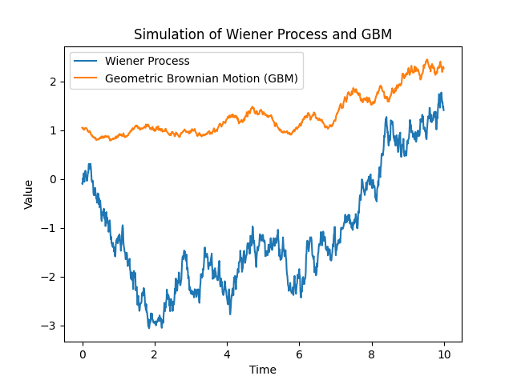

The Wiener Process (Brownian Motion):
The Wiener process, or Brownian motion, is a continuous-time stochastic process that exhibits random motion. It has stationary, independent increments, and is widely used in various fields, including physics and finance. The script simulates the Wiener process using random increments sampled from a normal distribution.
Derivation of Geometric Brownian Motion (GBM):
The Geometric Brownian Motion (GBM) is a continuous-time stochastic process that extends the Wiener process. It serves as a fundamental model for describing the evolving value of financial assets. The equation for GBM is given by:
d𝑆𝑡 = 𝜇𝑆𝑡dt + 𝜎 𝑆𝑡d𝑊𝑡
Where:
- 𝑆𝑡 is the value of the process at time 𝑡,
- 𝜇 is the drift or expected rate of return,
- 𝜎 is the volatility or standard deviation of the returns,
- 𝑊𝑡 is a Wiener process.
This equation represents the differential form of GBM, capturing the instantaneous rate of change in the asset's value. The derivation involves utilizing the properties of the Wiener process and integrating to obtain the final expression.
Simulation of Wiener Process and GBM:
The Python script simulates both the Wiener process and the GBM. The Wiener process represents the random motion, while the GBM extends this concept to model the evolving value of a financial asset. The resulting plot illustrates the simulated paths of both processes over time.
Practical Significance:
The Wiener process and GBM are fundamental in financial modeling, where GBM is often used to describe the price movement of financial instruments such as stocks. Understanding and simulating these processes contribute to the development of models for pricing options, risk management, and portfolio optimization.
Wiener Process and GBM Simulation Plot:
Conclusion:
Simulating the Wiener process and GBM provides a practical insight into the behavior of stochastic processes in continuous time. These processes serve as foundational concepts in financial mathematics and are crucial for understanding the dynamics of random phenomena in diverse fields.